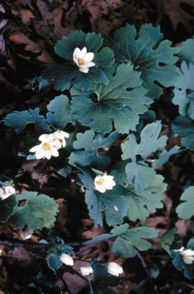
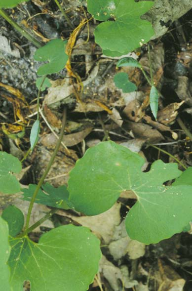

Sanguinaria Canadensis
Family: Papaveraceae
Bloodroot
Swink/Wilhelm #6


FLOWERING: Late March to May
SEED TIMING: Mid-May to Mid-June
HABITAT: Rich, moist woods
DIAGNOSTIC FEATURES: 6 - 12 inches high. Distinctive palmate, lobed leaf surrounding large white flowers with 8 to 10 petals. Plant juices look like rusty blood. Green seed pods come up on separate stem.
TO PICK: Separate leaves to look for pods underneath. When pods are slightly yellow, open one to see if seeds are starting to turn brown. Pick pods whole, before they split. Temporarily store in lightly covered containers in the refrigerator. Keep from drying out, but allow some air to prevent molding. Sanguinaria should be planted soon after picking.